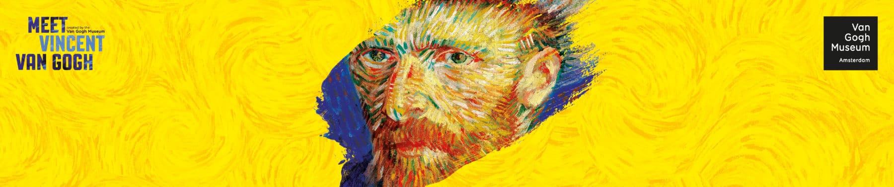
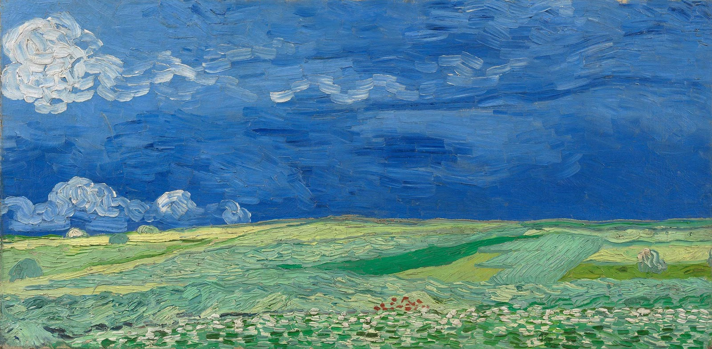
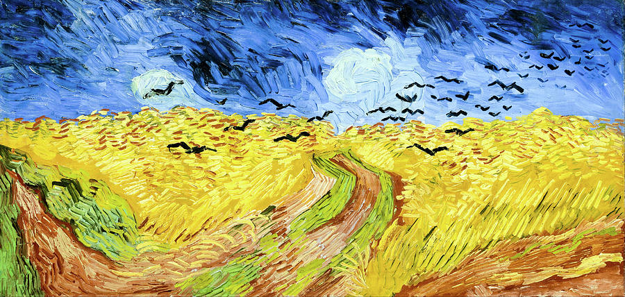
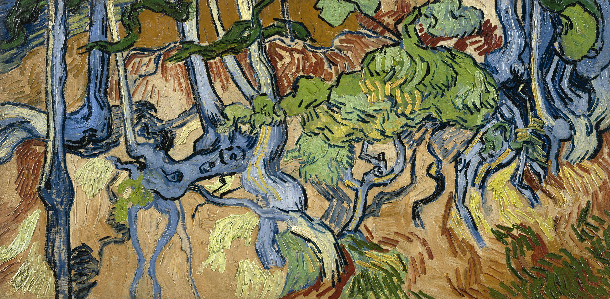
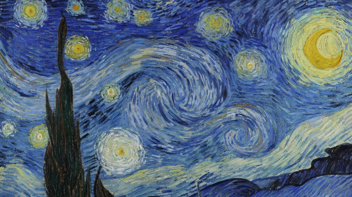

— EXHIBITION —

In the last weeks of his life, Van Gogh completed a number of impressive paintings of the wheatfields around Auvers.
In these landscapes he tried to express 'sadness, extreme loneliness'. But the overwhelming emotions that Van Gogh experienced in nature were also positive.
The elongated format of Wheatfields under Thunderclouds is unusual. It emphasizes the grandeur of the landscape, as does the simple composition: two horizontal planes.
— SPRING —

Wheatfield with Crows is one of Van Gogh's most famous paintings.Van Gogh did want his wheatfields under stormy skies
to express 'sadness, extreme loneliness', but at the same time he wanted to show what he considered 'healthy and fortifying about the countryside'
Van Gogh used powerful colour combinations in this painting: the blue sky contrasts with the yellow-orange wheat,
while the red of the path is intensified by the green bands of grass.
— SUMMER —

This painting seems at first sight to consist of a jumble of bright colours and fanciful abstract forms. Only after that do you realise that it shows a slope with tree trunks and roots. These are trees used for timber, growing in a marl quarry. It is probably Van Gogh's very last painting. Andries Bonger, the brother-in-law of Vincent's brother Theo, described it in a letter: 'The morning before his death, he had painted a sous-bois [forest scene], full of sun and life.'
— FALL —

Van Gogh created Starry Night in 1889 just thirteen months before his death. At this time he was staying in an asylum at Saint-Remy in France and his behavior was particularly erratic due to his severe attacks. Starry Night is believed to show the view from his bedroom window at the asylum. The Starry Night painting was not van Gogh's first nocturnal canvas, as he had already completed Starry Night over the Rhone and Café Terrace at Night the previous year.
— WINTER —